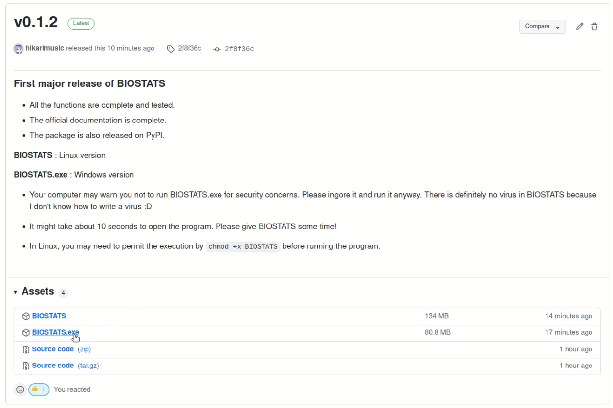
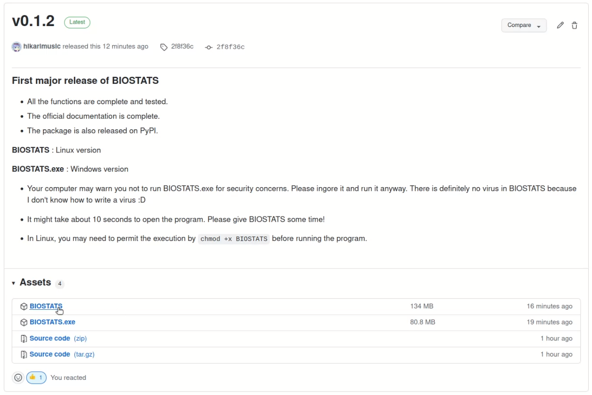

Download#
Windows#
You can download the latest version from Github Release. Please select the BIOSTATS.exe file.
Or you can download it from the link below:
Double click the downloaded file to run BIOSTATS.
Note
If Windows protect you from running it, please press More info > Run anyway. There is definitely no virus in BIOSTATS, and you can check all the codes on the Github Repository.
Note
Sometimes it will take quite a long time to open BIOSTATS. It is usually due to the virus scanning process of your computer, and I can do nothing about it. Please just wait for a while and maybe have a cup of tea!
Linux#
You can download the latest version from Github Release. Please select the BIOSTATS file.
Or you can download it from the link below:
Double click the downloaded file to run BIOSTATS. Or you can cd into the directory where BIOSTATS is in, and run the program by ./BIOSTATS.
Note
In Linux, you may need to permit the execution by chmod +x BIOSTATS before running the program.
Python Package#
For users who are familiar with Python, you can download the Python package and use it in the interactive mode or in your own project. To download the package, run the following command in the terminal:
pip install biostatistics
You can open the main window directly by the command biostats in any directory:
biostats
Or you can use BIOSTATS interactively in the terminal:
:~$ python3
>>> import biostats as bs
>>> data = bs.dataset("one_way_anova.csv")
>>> summary, result = bs.one_way_anova(data=data, variable="Length", between="Location")
>>> summary
Location Count Mean Std. Deviation 95% CI: Lower 95% CI: Upper
1 Tillamook 10 0.080200 0.011963 0.071642 0.088758
2 Newport 8 0.074800 0.008597 0.067613 0.081987
3 Petersburg 7 0.103443 0.016209 0.088452 0.118434
4 Magadan 8 0.078012 0.012945 0.067190 0.088835
5 Tvarminne 6 0.095700 0.012962 0.082098 0.109302
>>> result
D.F. Sum Square Mean Square F Statistic p-value
Location 4 0.004520 0.001130 7.121019 0.000281 ***
Residual 34 0.005395 0.000159 NaN NaN NaN
or incorporate BIOSTATS into your own project:
import biostats as bs
data = bs.dataset("one_way_anova.csv")
summary, result = bs.one_way_anova(data=data, variable="Length", between="Location")
print(summary)
print(result)